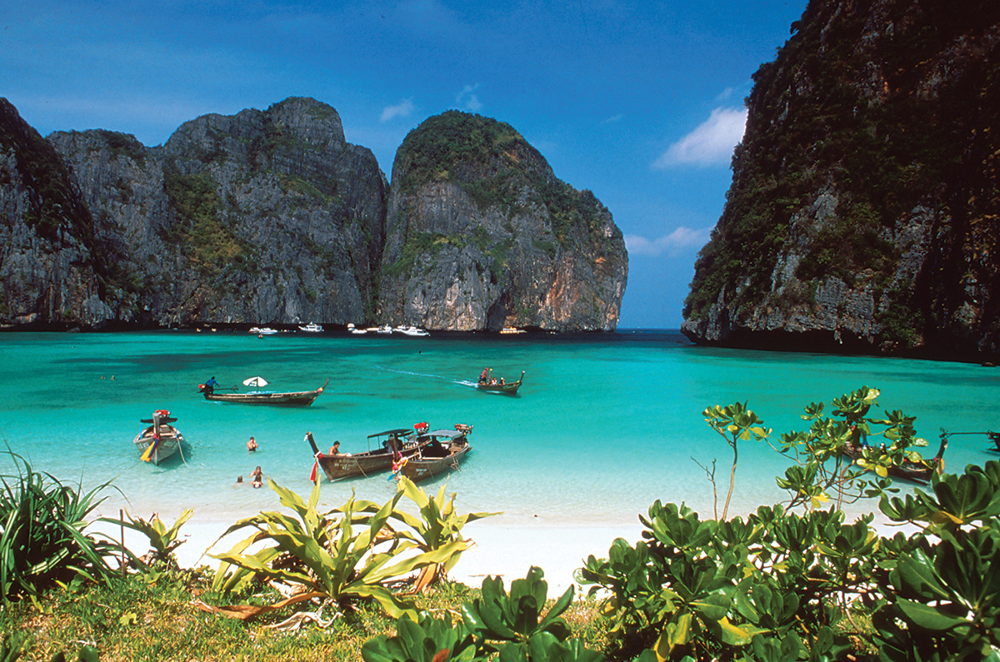

Thailandia 🐘

🏝️ Thailandia: Il Regno del Sorriso e dei Contrasti La Thailandia è un regno di contrasti affascinanti, unendo la spiritualità dei suoi **maestosi templi buddisti** e la frenesia delle metropoli come Bangkok, alla serenità delle sue isole meridionali. Il "Paese del Sorriso" offre un'esperienza incredibilmente ricca e accessibile, famosa per il suo delizioso **street food**, l'ospitalità e le spettacolari formazioni calcaree che emergono dal mare, come a Krabi. È ideale per backpacker, famiglie e chi cerca un mix di cultura, spiagge e avventura accessibile.
- 🎾 Attività: escursioni in barca, massaggi tradizionali, visite ai templi buddisti
- 🍳 Cibo tipico: Pad Thai, curry verde, mango con riso appiccicoso
- ⭐ Luoghi iconici: Grande Buddha, spiaggia di Patong, Phi Phi Islands